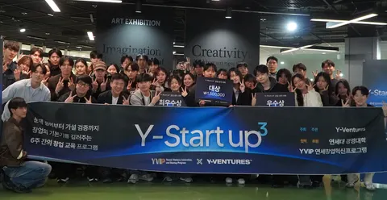
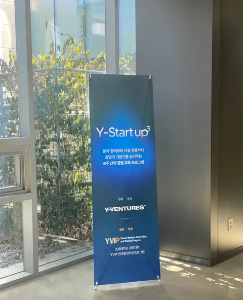
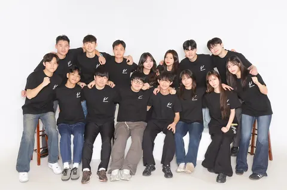
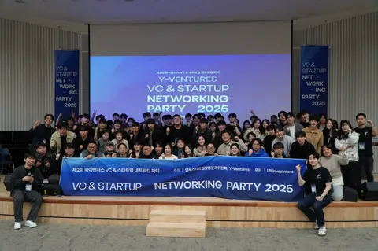
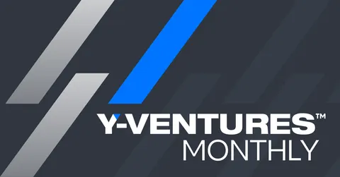

연세 창업 생태계에서 일어나는 일을 공유합니다.

그리고… 와이벤처스 백보성 대표의 퇴임인사

적토마의 기운을 담아 새해를 힘차게 시작하며,

Y-VENTURES의 2025 회고와 2026을 향한 준비

2025 VC & Startup Networking Party 를 통해 연결된 연세대의 창업 생태계

Y-VENTURES, 저희가 어떤 단체냐면요...
이메일 주소만 있으면 됩니다. 모든 메일 하단 링크로 언제든 해지할 수 있습니다.